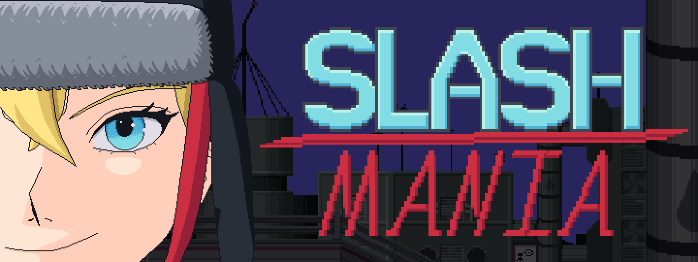
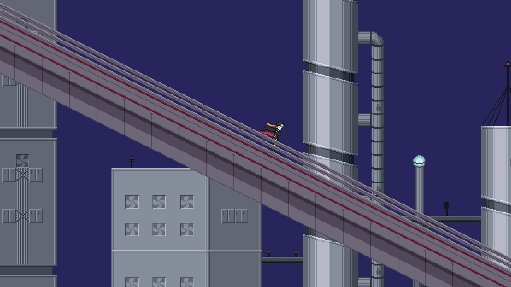

Grade: 19/20
Slash Mania is a platformer hack and slash that was made in the Unity engine as the final project for Game Design class.

This game takes place in the near future where datacenters became so huge they eventually turned into cities guarded by AI robots.
The first (and only) level takes place in one of these Datacenter Cities, where one cosplayer has sworn to destroy every Artificial Intelligence as AI took out all creativity humanity once had. Because of this she became known as The Decommissioner.

For this project I designed all sprites and tilesets and made almost every music track in the soundtrack. I also helped in some parts of programming, most noticeably on the player movement and on the enemies' behaviour.
This is the project that introduced me to the Unity engine and helped me learn the basics of it.
The level design of this game was inspired by the classic Sonic the Hedgehog games, where they usually have 3 paths: the top one which is the fastest but is the hardest to stay on, the bottom one which is the slowest and has more enemies, and the middle one which is somewhere in between.
The art style was also inspired by classic Sonic the Hedgehog and other 16-bit style games from the era of the Super Nintendo and the Mega Drive.
The 5 main inspirations for the design of the Decommissioner were Raiden from Metal Gear Rising, both Revolver Ocelot and the enemy soldiers from Metal Gear Solid 3, Samus Aran from the Metroid series and Trish from Devil May Cry.
The Boss was inspired both by Omega Flowey from Undertale and GLaDOS from Portal 2